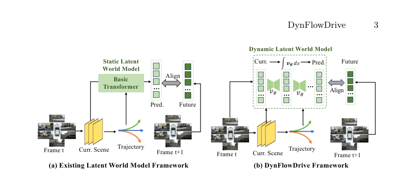

DynFlowDrive
简单摘要
这篇工作要解决的问题是：最近，世界模型已被纳入自动驾驶系统中，以提高规划的可靠性。
对应的核心做法是：现有方法通常通过外观生成或确定性回归来预测未来状态，这限制了它们捕获轨迹条件场景演化的能力，并导致不可靠的行动规划。
从机制上看，关键设计在于：为了解决这个问题，我们提出了 DynFlowDrive，这是一种潜在的世界模型，它利用基于流的动力学来模拟不同驾驶行为下世界状态的转变。
训练或推理层面的重点是：通过采用整流流公式，该模型学习了一个速度场，该速度场描述了不同驾驶动作下场景状态如何变化，从而能够逐步预测未来的潜在状态。
实验层面的主要信号是：在此基础上，我们进一步引入了一种稳定性感知的多模式轨迹选择策略，该策略根据诱导的场景转换的稳定性来评估候选轨迹。


简而言之，这篇论文关注的核心是：这篇工作要解决的问题是：最近，世界模型已被纳入自动驾驶系统中，以提高规划的可靠性。 对应的核心做法是：现有方法通常通过外观生成或确定性回归来预测未来状态，这限制了它们捕获轨迹条件场景演化的能力，并导致不可靠的行动规划。 从机制上看，关键设计在于：为了解决这个问题，我们提出了 DynFlowDriv…
这篇工作要解决的问题是：端到端自动驾驶已成为构建驾驶系统的有前途的范例。
对应的核心做法是：根据机载传感器捕获的数据，它旨在预测安全可靠的未来轨迹，以进行规划和控制。
从机制上看，关键设计在于：然而，轨迹规划是一个与周围环境高度交互的过程。
训练或推理层面的重点是：计划轨迹代表预期的动作，其安全性取决于执行后环境的响应方式。
实验层面的主要信号是：因此，实现可靠和安全的规划需要预测未来的场景演变，这仍然是自动驾驶系统的一个关键挑战。
核心创新
综合引言与方法部分，这篇论文的核心创新可以概括为以下几方面：
1）问题定义与研究动机
这篇工作要解决的问题是：端到端自动驾驶已成为构建驾驶系统的有前途的范例。
对应的核心做法是：根据机载传感器捕获的数据，它旨在预测安全可靠的未来轨迹，以进行规划和控制。
从机制上看，关键设计在于：然而，轨迹规划是一个与周围环境高度交互的过程。
训练或推理层面的重点是：计划轨迹代表预期的动作，其安全性取决于执行后环境的响应方式。
实验层面的主要信号是：因此，实现可靠和安全的规划需要预测未来的场景演变，这仍然是自动驾驶系统的一个关键挑战。
2）方法框架与核心模块
这篇工作要解决的问题是：如图所示，DynFlowDrive 建立在标准的端到端规划框架以及基于流的潜在世界建模之上。
对应的核心做法是：给定当前时间步长的周围视图摄像机图像和高级导航命令，基于视觉的方法旨在预测由 BEV 空间中的一组未来点组成的规划轨迹。
从机制上看，关键设计在于：），它根据遵循端到端自动驾驶标准规划范式的观察结果生成多模式轨迹；。
训练或推理层面的重点是：），使用基于流的动态模型模拟以规划轨迹为条件的潜在场景的演化，以及 3）稳定性感知多模式选择（第 2 节）。
实验层面的主要信号是：），它根据动态稳定性选择轨迹模式以进行可靠的监控。
3）实验设计与工程价值
这篇工作要解决的问题是：数据集和指标为了进行全面评估，我们在两个基准上训练和评估我们的 DynFlowDrive，包括开环 nuScenes 和闭环 NavSim。
对应的核心做法是：nuScenes 数据集包含新加坡和波士顿不同驾驶场景的 1000 个驾驶场景。
从机制上看，关键设计在于：与之前的研究一致，我们利用计算出的位移误差（ ）与地面实况和碰撞率（CR）进行性能评估。
训练或推理层面的重点是：位移误差是通过预测与 GT 轨迹之间的误差来计算的，而 CR 则量化了遵循预测轨迹与周围物体的碰撞概率。
实验层面的主要信号是：所有指标均在未来 3 秒内计算，间隔 0.5 秒，并按 1 秒、2 秒和 3 秒进行评估。
技术细节
下面按照论文的方法章节结构展开，重点说明模型的关键模块、公式设计和训练策略。
这篇工作要解决的问题是：如图所示，DynFlowDrive 建立在标准的端到端规划框架以及基于流的潜在世界建模之上。
对应的核心做法是：给定当前时间步长的周围视图摄像机图像和高级导航命令，基于视觉的方法旨在预测由 BEV 空间中的一组未来点组成的规划轨迹。
从机制上看，关键设计在于：），它根据遵循端到端自动驾驶标准规划范式的观察结果生成多模式轨迹；。
训练或推理层面的重点是：），使用基于流的动态模型模拟以规划轨迹为条件的潜在场景的演化，以及 3）稳定性感知多模式选择（第 2 节）。
实验层面的主要信号是：），它根据动态稳定性选择轨迹模式以进行可靠的监控。
$$ \mathbf{Q}_t^{\text{scene}} = \mathrm{CrossAttn}(\mathbf{Q}_t^{\text{scene}}, \mathbf{F}_t^{\text{i}}). $$
这条公式用于定义模型中的核心计算关系：左侧给出目标量，右侧由输入与参数共同决定。阅读时可先关注 Q、F、i 的物理/几何含义，再看它们如何影响训练目标或渲染结果。
$$ \mathbf{Q}_t^{\text{traj}} = \mathrm{CrossAttn}(\mathbf{Q}_t^{\text{traj}}, \mathbf{Q}_t^{\text{scene}}). $$
这条公式用于定义模型中的核心计算关系：左侧给出目标量，右侧由输入与参数共同决定。阅读时可先关注 Q 的物理/几何含义，再看它们如何影响训练目标或渲染结果。
$$ \hat{\mathbf{T}}_t = \mathbf{T}_t + \mathrm{MLP}_{\text{traj}}(\mathbf{Q}_t^{\text{traj}}), \quad \mathbf{c}_t = \mathrm{MLP}_{\text{s}}(\mathbf{Q}_t^{\text{traj}}), $$
这条公式用于定义模型中的核心计算关系：左侧给出目标量，右侧由输入与参数共同决定。阅读时可先关注 T、Q、c、s 的物理/几何含义，再看它们如何影响训练目标或渲染结果。
$$ \mathbf{z}_t^i = \mathrm{MLP}(\mathbf{E}_{\text{vae}}(I_t^i)), \quad i = 1, \dots, V. $$
这条公式用于定义模型中的核心计算关系：左侧给出目标量，右侧由输入与参数共同决定。阅读时可先关注 z、i、E、I_t 的物理/几何含义，再看它们如何影响训练目标或渲染结果。
$$ \tilde{\mathbf{z}}_t^{\text{w}} = \mathrm{CrossAttn}(\mathbf{Q}_t^{\text{scene}}, \{\mathbf{z}_t^i\}_{i=1}^V), $$
这条公式用于定义模型中的核心计算关系：左侧给出目标量，右侧由输入与参数共同决定。阅读时可先关注 z、w、Q、i 的物理/几何含义，再看它们如何影响训练目标或渲染结果。
$$ \mathbf{a} = (1-\alpha)\tilde{\mathbf{z}}_t^{\text{w}} + \alpha \boldsymbol{\epsilon}, \quad \boldsymbol{\epsilon} \sim \mathcal{N}(\mathbf{0}, \mathbf{I}), $$
这条公式用于定义模型中的核心计算关系：左侧给出目标量，右侧由输入与参数共同决定。阅读时可先关注 a、z、w、N 的物理/几何含义，再看它们如何影响训练目标或渲染结果。


把全文方法串起来看，这篇论文的逻辑基本都遵循同一条主线：先把输入组织成更容易处理的表示，再通过模型结构和损失函数把这个表示推向目标输出，最后用可视化与数值实验共同证明该设计有效。
实验结论
实验部分主要回答两个问题：第一，方法是否真的优于已有基线；第二，这种优势来自哪一个设计决策。
这篇工作要解决的问题是：数据集和指标为了进行全面评估，我们在两个基准上训练和评估我们的 DynFlowDrive，包括开环 nuScenes 和闭环 NavSim。
对应的核心做法是：nuScenes 数据集包含新加坡和波士顿不同驾驶场景的 1000 个驾驶场景。
从机制上看，关键设计在于：与之前的研究一致，我们利用计算出的位移误差（ ）与地面实况和碰撞率（CR）进行性能评估。
训练或推理层面的重点是：位移误差是通过预测与 GT 轨迹之间的误差来计算的，而 CR 则量化了遵循预测轨迹与周围物体的碰撞概率。
实验层面的主要信号是：所有指标均在未来 3 秒内计算，间隔 0.5 秒，并按 1 秒、2 秒和 3 秒进行评估。
- 方法在核心指标上的优势与结构设计和训练目标直接相关；
- 消融实验表明，拿掉关键模块后性能与结果质量都有明显回落；
- 论文不仅比较数值，也关注可视化质量、稳定性和泛化能力等更贴近真实使用的信号。
理解评价
这篇工作要解决的问题是：在这项工作中，我们提出了 DynFlowDrive，一种基于流的动态潜在世界建模，它通过修正流显式地模拟潜在空间中的渐进场景演化。
对应的核心做法是：通过对候选轨迹进行调节，我们的方法可以动态模拟未来的世界状态，并通过稳定性感知的多模式选择支持更可靠的轨迹评估。
从机制上看，关键设计在于：nuScenes 和 NavSim 上的大量实验表明，DynFlowDrive 能够持续提高不同端到端驾驶框架的规划准确性和安全性。
训练或推理层面的重点是：这些结果凸显了对世界动态进行显式建模对于稳健且可扩展的自动驾驶系统的重要性。
实验层面的主要信号是：未来的工作包括集成视觉语言模型（VLM）以实现更强大的语义推理，提高罕见极端情况下的鲁棒性，以及确保不同驾驶环境的可扩展性。
如果把它当成研究参考，建议重点关注三件事：第一，这套方法真正依赖的归纳偏置是什么；第二，实验中真正拉开差距的模块是哪一个；第三，它的局限究竟来自数据、算力还是监督信号本身。
以下相关论文可以作为进一步追踪的入口：